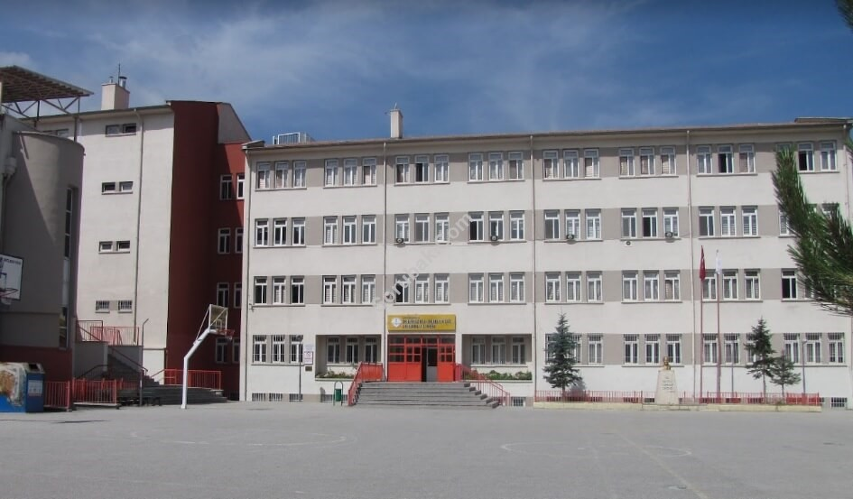

Our History
Our school started education on 26 August 1996 under the name of "Yılmaz Anatolian High School" on one floor of Reha Alemdaroğlu High School in Yıldız district of Çankaya district. After two years, with the approval of the Ministry of National Education General Directorate of Secondary Education, dated 04.01.1998 and numbered 14629, it's name was changed to Dr. Binnaz Ege-Dr. Rıdvan Ege Anatolian High School. On May 3, 1999, it moved to its new building in the Balgat district. The final acceptance of our new building, which was connected to its construction on October 28, 1993, was made on June 5, 2000, and education started on May 22, 1999 with the opening of our 9th President, Süleyman Demirel. Our school was made with the contributions of Prof. Dr. Rıdvan Ege.
Our School Principals
- Ali Rıza OKUR (1996 - 2000)
- Necati YANKIN (2000 - 2009)
- Reşit Yardımcı (2009 - 2010)
- Dr. Refik Turan (2010 - 2014)
- Dursun YEŞİLOVA (2014 - 2019)
- Ümit Emre ÇİÇEK (2019- )